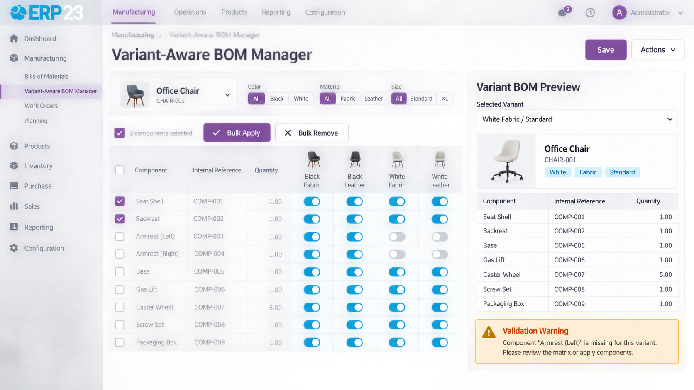

Visual tool for configuring which BOM lines apply to which product variants, instead of manually keying variant filters.
Configuring a variant-specific Bill of Materials in stock Odoo means opening each BOM line and manually picking attribute-value filters one at a time — tedious and error-prone once a product has more than a couple of variants. Variant-Aware BOM Manager replaces that with a single matrix: BOM lines as rows, every product variant as a column, and a click to toggle whether a line applies to a variant. Bulk-select several lines and variants to apply or remove applicability in one action, preview the exact resolved BOM for any variant before saving, copy a working variant's configuration onto a new similar one, and get an immediate warning if a variant is left with zero applicable lines. It's a UI/UX layer only — no new data model, no change to manufacturing order creation, just a much faster way to manage the variant BOM configuration Odoo already supports.
BOM lines as rows, variants as columns — toggle applicability with a click.
Select several lines and variants and toggle applicability across all of them at once.
See the exact resolved BOM for any single variant before saving.
Duplicate a working variant's BOM setup as the starting point for a new one.
Flags variants left with no applicable BOM lines before you leave the screen.
Works directly on the same field core Odoo already uses for variant BOMs.
The variant preview panel doesn't reimplement BOM resolution logic — it calls the same explode() method core Manufacturing uses when it builds a manufacturing order. What you see in the preview is exactly what will happen on the shop floor, not an approximation.
ERP23
Developed and maintained by ERP23.
Website: https://www.erp-23.com/
Email: erp23@brainstation-23.com